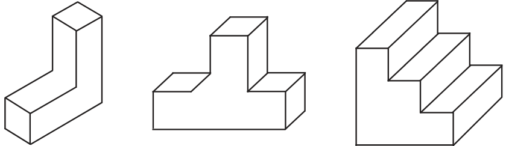
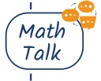
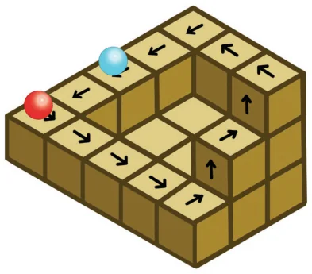
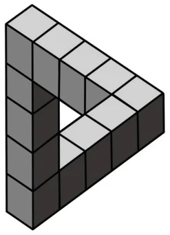

- 1.In addition to the 5 ways shown in Fig. 4.8, are there any additional ways of gluing four cubes together along faces? Can you visualise and draw these as well? Math Talk

- 2.Draw the following figures on the isometric grid.

[Hint: It may be useful to determine whether the edge to be currently drawn - say, along the height - goes from down to up or up to down. Accordingly, draw the line segment on the grid either in the direction of the height axis or opposite to it.]
- 3.Is there anything strange about the path of this ball? Recreate

it on the isometric grid.

[Hint: Consider a portion of this figure that is physically realisable and identify the 3 primary directions.]
- 4.Observe this triangle.

- (i)Would it be possible to build a model out of actual cubes? What
are the front, top, and side profiles of this impossible triangle?

- (ii)Recreate this on an isometric grid.
- (iii)Why does the illusion work? Math Talk